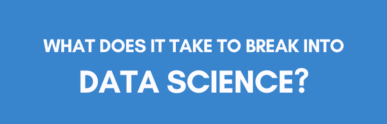
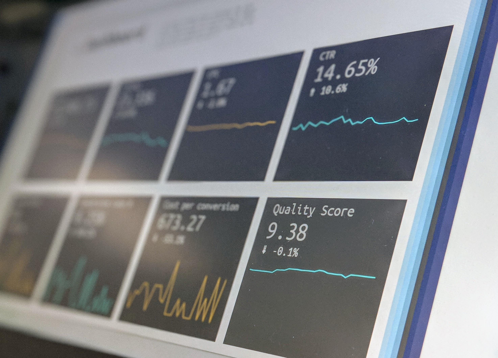

As the graduation soon approaches, I've been actively looking for job in the analytics field. I wondered if there is a trend on what companies are looking for,
what are the requirements, what can I do to make optimize my job search, so I set out to look for data on this subject. In this project I'll apply EDA and
Text Analysis with Python using pandas, matplotlib, re packages on a data set of 7000 job descriptions to answer these questions.

This project is an example of my work in exploratory data analysis with Python. By utilizing packages like pandas and matplotlibs on a monthly sales data set. I managed to turn raw data to crucial business intelligence to facilitate decision making. Together with visualization of the process that allowed my work to be communicated efficiently with key decision makers. I believe that this is a great asset for any company to have.

Practicing my data story telling skill is crutial for my proffesional development. In this project, I utilized Power BI tools such as Power Query to manipulate the data and produced visualizations to evaluate year-over-year results of profit and loss statement. By having a clear and consistent view of the data, as well as the ability to drill down to the smallest detail, I believe that Power BI greatly improves my ability to identify and define business problem.

This project is my attempt at web scrapping and creating functions to improve work flow. Since one of my interests is in investing I thought it would be fun to create a couple of tools from data I garthered from Yahoo Finance. By using libraries such as request, beautifulsoup and ggplot2, I was able automate the process of pulling the data from the web as well as visuallizing it.